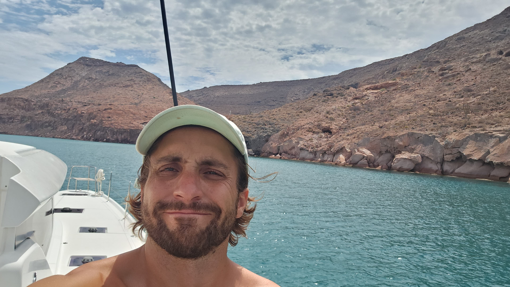
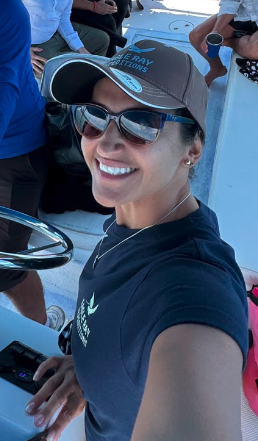
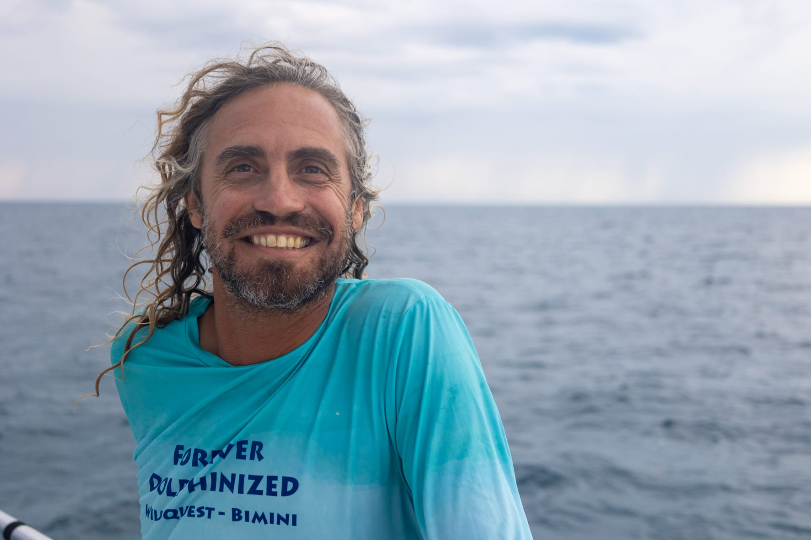
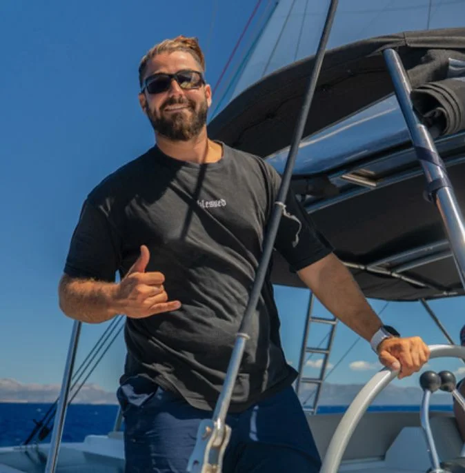
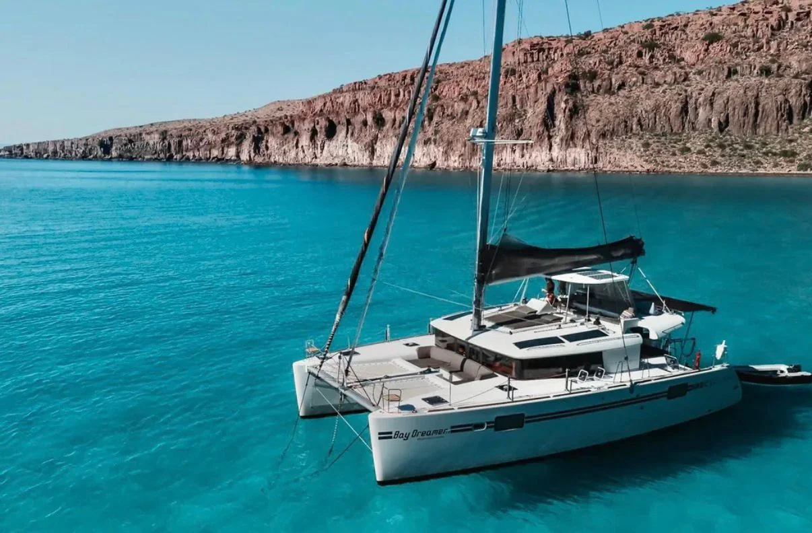

Eagle Ray Expeditions
- Experience-first, exploration-driven.
- The same crew, who know the channel by memory.
- Adaptive routes, redrawn by weather and tide.
- The water is the plan — dive, snorkel, kayak, every day.

Small groups. Real crew. Private catamaran. No fixed schedule.
01 What we do
Eagle Ray Expeditions designs and leads small-group ocean expeditions combining sailing, diving, and wildlife encounters in Baja California Sur. Built for people who want more than a boat.
They sell trips.
We design human
expeditions.
I didn't want to sell boats. I wanted to build the kind of trip I'd actually want to be on — with people who know the ocean, not just how to hand you a set of keys.
— Thibault Poirson De Cardon, Founder
02 Who you sail with
We select crew for two things:how they handle a boat, and how they make people feel welcome on it. Most charter companies hire for one or the other. We don't.Read their profiles, and tell us who you'd like on board, we'll do our best to match their schedule.

Founder
Founder & Expedition Host
Thibault has called Mexico home since 2016. After seven years scaling tech ventures in Mexico City, he turned his energy toward what always mattered most: adventure, human connection and the power of the sea. He is building Eagle Ray one trusted relationship at a time, bringing together sea people who share the same warmth, curiosity and instinct for life at sea.

Expedition Leader — Scuba
Thibault met Alexis in Chile when they were five years old. Today, Alexis leads Eagle Ray underwater — an international scuba instructor with five-star hospitality in his reflexes, honed at Ritz-Carlton and Mandarin Oriental. He reads a table the way he reads a dive site: quickly, quietly, before anyone else notices. They call him the Pirate, and he earned it. He knows which hidden cove to choose, which story belongs at dinner, and when silence says more. With Alexis aboard, exceptional dives tend to end in long French dinners, good wine and the kind of moments that become crew legend.

Captain
Benji spent eight years running industrial and energy operations before trading project sites for the helm. The civil engineer never disappeared: he reads weather routing like a systems map and notices what the boat needs before it asks. While everyone watches the horizon, Benji has already cleared the way for the next adventure.

Expedition Leader — Kite & Scuba
Thibault met Adly while learning to kite in La Ventana, Mexico's legendary wind playground. Originally from Egypt, Adly soon invited him to return the favor on the Red Sea. An engineer by training, he is now an IKO kite instructor and PADI scuba instructor with 1,500+ dives, 80+ students and boat-crew experience across four continents. Adly reads wind, current and group energy in the same glance. He knows when to push for one more dive — and when doing absolutely nothing at anchor is exactly the adventure everyone needs.

Gold Chef
Antoine has spent 15+ years cooking aboard boats and superyachts, including as a private chef for senior executives. He knows exacting standards, tiny galleys and saltwater appetites. His magic is restaurant technique made for the sea: precise without stiffness, generous without spectacle and served when the whole crew is ready to remember it.

Silver Chef
Ana built her own pastry business from scratch, so she knows magic rarely arrives by accident. It lives in timing, texture and the extra detail nobody thought to request. On board, she cooks the same way: attentive, inventive and quietly generous — turning a simple breakfast into a ritual and dessert into the story told back on shore.

Expedition Leader
Before she learned to read a boat full of divers, Monique spent years reading rooms in corporate marketing. Then the Brazilian dive instructor traded the office for Baja, where she has spent six years learning its water and people. She catches the current, hesitation and group mood early — without ever making guests feel managed.

Expedition Leader
Juan Carlos has been a dive instructor since he was 20, worked on liveaboards in the Revillagigedo Islands and sailed solo from Loreto to La Paz. He carries experience that never needs to announce itself. He knows when the water deserves respect and when a group is ready to go deeper. Around him, courage becomes contagious — never reckless.

Captain & Expedition Leader
Lou is a captain, kite specialist and freediver who has made Baja her home. She does not take over a boat's atmosphere; she changes it. Shoulders drop, breathing slows and nervous first-timers begin to belong. Lou reads the sea and people with the same grounded instinct, knowing when to add energy and when to make space.

Captain & Expedition Leader
Javier makes the ocean feel bigger. Yacht Master 200GT, PADI dive instructor, IKO kite instructor, freediving and spearfishing guide, and drone pilot — he can captain the boat, open the underwater world, find the wind and film it all. His real gift is confidence: guests stop watching adventure and start asking what comes next.

Chef, Hostess & Stewardess
Flavia cooks, works the deck, trains people and films the day as it happens. On a small boat, that is not four jobs; it is one rare instinct for keeping life in motion. She knows what a hungry swimmer needs, how to lift the group at sunrise and when the camera should disappear. With Flavia aboard, everything flows.
We select crew for two things: how they handle a boat, and how they make people feel welcome on it. Most chartercompanies hire for one or the other. We don't. Read their profiles, and tell us who you'd like on board. We'll do our best to match their schedule, though we can't always guarantee it..
03 Where we sail
Cousteau's name for the Sea of Cortez. A narrow gulf that concentrates what other oceans spread across thousands of miles — cold upwellings, deserted islands, and a density of life that still surprises people who've sailed it for years. We work the stretch between La Paz, Espíritu Santo, and Cerralvo.
07 Your expedition

4 cabins, 8 berths, 4 heads. Flybridge, Starlink, watermaker — built for groups who want space and comfort in equal measure.
09 Build your expedition
4 quick questions. At the end, WhatsApp opens with your expedition already drafted — Thibault gets the full picture and replies with a real proposal within 48 hours, not a "thanks for your interest."
Baja California Sur